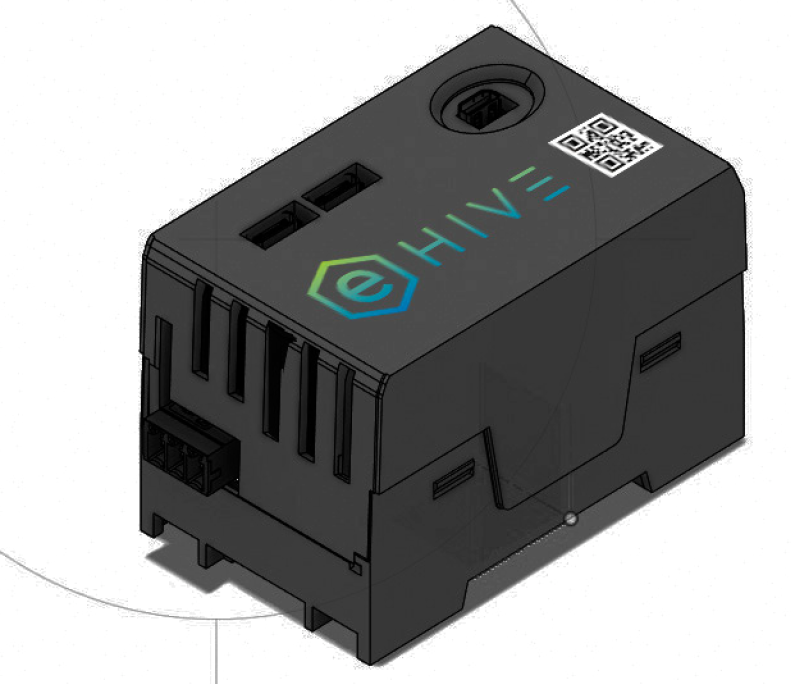

KOMPATIBILITÄT
Wir sprechen herstellerübergreifend mit über 900 Geräten. Wöchentlich kommen neue hinzu.

Vor der Einbindung
Das genaue Modell entscheidet.
Die Herstellerübersicht zeigt grundsätzlich unterstützte Gerätefamilien. Ob eine konkrete Komponente vollständig funktioniert, hängt von Modell, Firmware, freigeschalteter Schnittstelle, Netzwerkverbindung und eingesetzter evcc-Version ab.
Geräteübersicht
Unterstützte Hersteller und Geräte
Finde passende Hersteller für Wallboxen, Wechselrichter, Batteriespeicher, Wärmepumpen, Fahrzeuge, Energiezähler und weitere steuerbare Verbraucher.
Kein passender Hersteller gefunden. Prüfe zusätzlich die genaue Modellbezeichnung in der evcc-Dokumentation.
Wallboxen
evcc steuert kompatible Wallboxen anhand von PV-Überschuss, Stromtarifen, Ladeplänen und Netzvorgaben. Der Funktionsumfang hängt vom Modell und seiner Schnittstelle ab.
- ABB
- ABL
- Alfen
- Alphatec
- Alpitronic
- Amperfied
- Ampure
- Audi
- AUTEL
- Autoaid
- Bender
- BMW
- cFos
- Charge Amps
- ChargeLine
- ChargeX
- Compleo
- CUBOS
- Cupra
- Dadapower
- DaheimLaden
- Delta
- E.ON Drive
- E3/DC
- Easee
- Ebee
- echarge
- EcoHarmony
- Edgetech
- Elecq
- eledio
- Elli
- EM2GO
- EN+
- enercab
- Ensto
- EntraTek
- ESL
- eSystems
- ETEK
- Etrel
- EV Expert
- EVBox
- FoxESS
- Free2Move
- Free2move eSolutions
- Fronius
- Garo
- go-e
- Hardy Barth
- Heidelberg
- Hesotec
- Home Assistant
- Homecharge
- Huawei
- Innogy
- INRO
- Juice
- Kathrein
- KEBA
- Kontron Solar
- Kostal
- KSE
- LadeFoxx
- LRT
- Mennekes
- Neoom
- NRGkick
- OBO Bettermann
- OpenEVSE
- openWB
- Optec
- Orbis
- PC Electric
- Peblar
- Phoenix Contact
- Plugchoice
- Porsche
- Pracht
- Pulsares
- Pulsatrix
- Qcells
- Schneider
- Schrack
- SENEC
- Shelly
- Siemens
- Sigenergy
- Skoda
- SMA
- Smartfox
- SolarEdge
- Solax
- Sonnen
- Spelsberg
- Stark in Strom
- Sungrow
- TechniSat
- Tesla
- Tigo
- TinkerForge
- Ubitricity
- V2C
- Vestel
- Veton
- Victron
- Viridian EV
- Volkswagen
- Volt Time
- Voltie
- Wallbe
- wallbox
- Walther Werke
- Webasto
- Weidmüller
- Zaptec
- ZJ Beny
Wechselrichter und Batteriespeicher
Wechselrichter, Energiezähler und Batteriespeicher liefern Messwerte für Erzeugung, Netzbezug und Speicherzustand. Bei ausgewählten Systemen kann evcc zusätzlich Lade- und Entladevorgänge beeinflussen.
- A-Tronix
- ABB
- Acrel
- Ads-tec
- Alpha ESS
- Ampere
- amsleser.no
- Anker
- APsystems
- Atmoce
- AVM
- Axitec
- B+GE-TECH
- batterX
- Bernecker Engineering
- Bosch
- Bosswerk
- Carlo Gavazzi
- DDM
- Deye
- DZG
- E3/DC
- Eastron
- EcoFlow
- Enphase
- FENECON
- Finder
- FoxESS
- FRITZ!
- Fronius
- Ginlong
- go-e
- GoodWe
- Growatt
- Home Assistant
- Homematic IP
- HomeWizard
- Hoymiles
- Huawei
- IAMMETER
- IGEN Tech
- inepro
- INTILION
- Janitza
- Kostal
- LG
- Lovato
- Loxone
- M-TEC
- Marstek
- myStrom
- OpenEMS
- ORNO
- Powerfox
- Qcells
- RCT
- Saia-Burgess Controls (SBC)
- SAJ
- SAX
- Schneider Electric
- SENEC
- Senergy
- Sermatec
- Shelly
- Siemens
- Sigenergy
- SMA
- Smartfox
- SofarSolar
- Solakon
- Solaranzeige
- SolarEdge
- SolarMax
- Solarwatt
- Solax
- Solinteng
- Sonnen
- St-ems
- Steca
- Strong Energy
- Sungrow
- Sunsynk
- Sunway
- Tasmota
- Tepto
- Tesla
- TP-Link
- VARTA
- Victron
- Wago
- Wattsonic
- Weidmüller
- Youless
- ZCS Azzurro
- Zendure
Wärmepumpen und Heizstäbe
Wärmepumpen und Heizstäbe können abhängig vom Gerät über SG Ready, EEBUS, Relais, Modbus oder weitere Schnittstellen eingebunden werden. Die Nennung eines Herstellers gilt nicht pauschal für jedes Modell.
- alpha innotec
- Bosch
- Bösch
- Buderus
- CTA All-In-One
- Daikin
- E.G.O.
- Elco
- Glen Dimplex
- IDM
- Junkers
- Kermi
- Lambda
- LG
- my-PV
- NIBE
- Novelan
- Ochsner
- Roth
- Stiebel Eltron
- Tecalor
- Vaillant
- Viessmann
- Wolf
- Xtherma
- Zewotherm
Energiezähler und Messtechnik
Verlässliche Messwerte am Netzanschluss, an der PV-Anlage, am Speicher und am Ladepunkt bilden die Grundlage für eine korrekte Energieregelung.
- A-Tronix
- Aandewiel
- ABB
- Acrel
- Alpha ESS
- Ampere
- amsleser.no
- Atmoce
- AVM
- Axitec
- B+GE-TECH
- batterX
- Bernecker Engineering
- Bosch
- Carlo Gavazzi
- cFos
- Cozify HAN
- DDM
- Deye
- DSMR
- DZG
- E3/DC
- Eastron
- EcoFlow
- Enphase
- ESPHome
- FENECON
- Finder
- FoxESS
- FRITZ!
- Fronius
- Ginlong
- go-e
- GoodWe
- Growatt
- Home Assistant
- Homematic IP
- HomeWizard
- Huawei
- IAMMETER
- inepro
- INTILION
- IOmeter
- Janitza
- KEBA
- Kostal
- LG
- Lovato
- Loxone
- M-TEC
- my-PV
- myStrom
- OpenEMS
- ORNO
- P1Monitor
- Powerfox
- Pstryk.pl
- Qcells
- RCT
- Saia-Burgess Controls (SBC)
- SAJ
- SAX
- Schneider Electric
- SENEC
- Senergy
- Sermatec
- Shelly
- Siemens
- Sigenergy
- SMA
- Smartfox
- Smartstuff
- SofarSolar
- Solakon
- Solaranzeige
- SolarEdge
- SolarMax
- Solarwatt
- Solax
- Solinteng
- Sonnen
- St-ems
- Strong Energy
- Sungrow
- Sunsynk
- Sunway
- Tasmota
- Tepto
- Tesla
- Tibber
- TP-Link
- TQ
- VARTA
- Victron
- Volkszähler
- Wago
- Wattsonic
- Weidmüller
- Youless
- ZCS Azzurro
- Zendure
- Zuidwijk
Fahrzeuge
Unterstützte Fahrzeuganbindungen können Ladestand, Reichweite und Ladestatus bereitstellen. Qualität und Verfügbarkeit der Hersteller-Schnittstellen können sich ändern.
- Aiways
- Audi
- BMW
- Citroën
- Dacia
- DS
- Fiat
- Ford (FordConnect Query)
- Home Assistant
- Hyundai
- Hyundai (US)
- Jeep
- Kia
- Mercedes-Benz
- MG
- Mini
- Nissan
- NIU
- Opel
- Peugeot
- Polestar
- Renault
- Seat
- Skoda
- Smart
- Subaru
- Tesla
- Toyota
- Volkswagen
- Volvo
- Zero Motorcycles
Smarte Schalter und Steckdosen
Schaltbare Steckdosen und Relais ermöglichen die Einbindung zusätzlicher Verbraucher und können abhängig vom Gerät auch Messwerte bereitstellen.
- AVM
- FRITZ!
- Home Assistant
- Homematic IP
- HomeWizard
- myStrom
- Shelly
- Tasmota
- TP-Link
Kompatibilität richtig einordnen
Hersteller gefunden – was bedeutet das?
- 01
Hersteller und Modell vergleichen
Prüfe die vollständige Modellbezeichnung. Ein Hersteller kann unterstützte und nicht unterstützte Produktserien anbieten.
- 02
Schnittstelle und Firmware prüfen
Kontrolliere, ob die benötigte lokale oder cloudbasierte Schnittstelle aktiviert ist und ob die Firmware zum verwendeten evcc-Treiber passt.
- 03
Gewünschte Funktion verifizieren
Ein Gerät kann Messwerte liefern, ohne alle Steuerfunktionen zu unterstützen. Prüfe deshalb die benötigte Funktion für die konkrete Anlage.
Häufige Fragen
Gerätekompatibilität im Detail
Welche Wallboxen funktionieren mit eHive One?
Grundsätzlich lassen sich die von evcc unterstützten Wallboxen einbinden. Entscheidend sind das genaue Modell, die verfügbare Schnittstelle und die gewünschten Funktionen wie Phasenumschaltung, RFID oder externe Leistungsbegrenzung.
Welche Wechselrichter unterstützt evcc?
evcc unterstützt Wechselrichter, Hybridwechselrichter und Messsysteme zahlreicher Hersteller. Welche Mess- oder Steuerwerte verfügbar sind, zeigt der konkrete Geräteeintrag in der evcc-Dokumentation.
Kann eine Wärmepumpe eingebunden werden?
Je nach Gerät ist eine Einbindung beispielsweise über SG Ready, EEBUS, Modbus oder Relais möglich. Die konkrete Signal- und Anlagenplanung muss zu Wärmepumpe, Energiemanagement und Elektroinstallation passen.
Ist jedes Modell eines aufgeführten Herstellers kompatibel?
Nein. Die Herstellerliste ist eine erste Orientierung. Modellbezeichnung, Firmware, Schnittstelle und Funktionsumfang müssen vor der Einbindung einzeln geprüft werden.
Benötigt eHive One für die Geräteintegration eine Cloud?
Viele Geräte lassen sich lokal über das Heimnetz oder einen Feldbus ansprechen. Einzelne Fahrzeug-, Tarif- oder Herstellerdienste können jedoch eine externe Schnittstelle und Internetzugriff benötigen.
Was muss vor dem Kauf geprüft werden?
Vergleiche das genaue Modell mit der evcc-Geräteliste und prüfe Firmware, Kommunikationsweg, benötigte Lizenz sowie die gewünschte Mess- oder Steuerfunktion. Arbeiten im Verteiler gehören in die Hände einer Elektrofachkraft.
Technische Einordnung
Deine Gerätekombination ist nicht eindeutig?
Sende uns Hersteller, vollständige Modellbezeichnung, Firmware und die vorgesehene Schnittstelle. Wir helfen dir bei der technischen Einordnung vor der Bestellung.